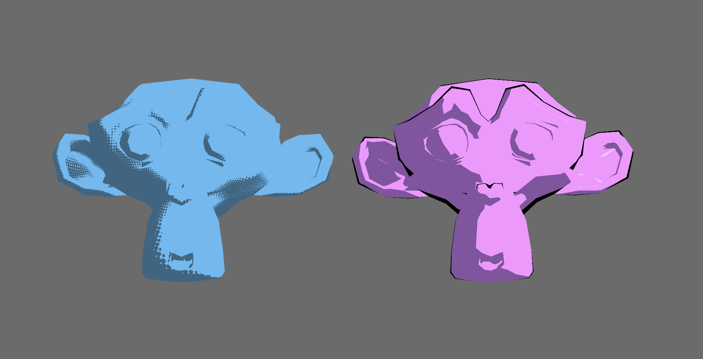
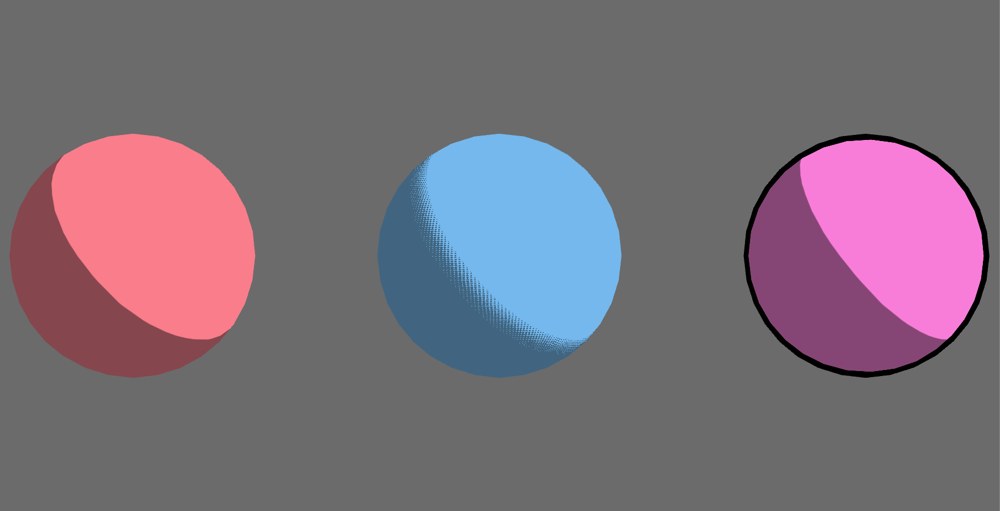
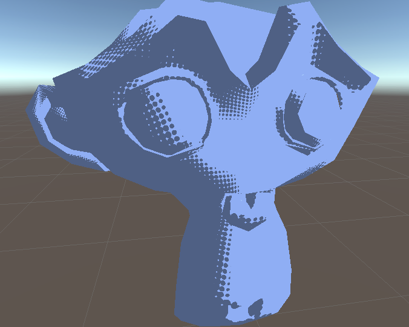

As a first approach, we implement a basic toon shader by modifying the Blinn-Phong lighting algorithm. To this end, we address a few technical details particular to Unity shader set up. These include passing directional lighting information from a Unity scene and transforming vertex normals using Unity's built in \(\texttt{ObjectToWorld}\) transformation matrices for use in a CG fragment shader. Once we have access to these components, it becomes much easier to coopt our understanding of the Blinn-Phong algorithm and shader operation as presented in CS 184's Project 4 framework for use in Unity.
This translation to Unity imparts at least one significant change to the standard algorithm. Unity directional lighting carries no positional information. Therefore, light intensity is considered to be constant throughout the scene and does not fall off with distance. With this in mind we beging from the basic Blinn-Phong formulation:
\[ \mathbf{L}_\text{BP} = \mathbf{I}_\text{color}\cdot (\mathbf{I}_\text{ambient} + \mathbf{I}_\text{diffuse} + \mathbf{I}_\text{specular}) \]
\[ \mathbf{L}_\text{BP} = \mathbf{I}_\text{color}(k_a + k_d \cdot \texttt{smooth_step}(s_0, s_1, \mathbf{n}\cdot\mathbf{l})) + k_s \cdot \texttt{smooth_step}(s_0', s_1', \mathbf{n}\cdot\mathbf{v})) \]
Notice that we replace the usual max function with a smooth step function. This replacement is the source of the cell-shaded effect. We pick some \(s_0\) and \(s_1\) such that \(\Delta s = s_1 - s_0\) is very small. These hard cut-offs divide the surface into dark, diffuse, and specular regions.
\[ \mathbf{I}_\text{ambient} = k_a \]
The dark region is lit only by a constant value where \(0 \le k_a \le 1\). \(k_a\) serves to scale the material color \(\mathbf{I}_\text{color}\).
\[ \mathbf{I}_\text{diffuse} = k_d \cdot \texttt{smooth_step}(s_0, s_1, \mathbf{n}\cdot\mathbf{l}) \]
As in the usual formulation, our algorithm implements a Lambertian diffuse term which represents the angular falloff of light calculated via the dot product of the world space vertex normal and the light direction. Since \(\Delta s\) is small we produce, effectively, a hard line, where \(\texttt{smooth_step}\) returns either \(0\) or \(1\), i.e. \(0\) or the diffuse scalar \(k_d\).
\[ \mathbf{I}_\text{specular} = k_s \cdot \texttt{smooth_step}(s_0', s_1', \mathbf{n}\cdot\mathbf{v}) \]
Similarly, the \(\texttt{smooth_step}\) in the specular term, \(\mathbf{I}_\text{specular}\), serves to switch \(0\le k_s \le 1\) on or off. Instead of precalculating a half-vector we have direct access to the view direction, \(v\). As this value is independent from the camera position, we are still able to observe and debug specular effects while navigating the scene-view in Unity.
There are two further effects that we can implement in addition to the basic cell-shading algorithm: outlines and dithering.
One way to create an outline around the geometry is by using multiple passes. However, for this first approach, we consider a simple method to produce a believable effect with only one pass. This method simply consideres the dot product of the vertex normal and the view direction \(n\cdot v\). We can then color parts of the surface where this dot product is less than \(0\) a solid color. Allowing for regions where this dot product is slightly greater than \(0\) equates to increasing the "thickness" of the outline. For smooth geometries, such as primitive spheres, this method produces the desired result and properties like the line-thickness are easy to control. On hand, for less regular geometries with hard edges, this method produces an outline with irregular thickness that often covers large sections of the surface with the outline color where the normal does not change across the area but remains within the cutoff range. To solve this issue, we can use a second pass which we implement in later iterations.
The second effect, dithering, could be achieved by referencing an external texture or performing multiple passes. Again, in our initial approach we wanted a robust, simple method to produce our desired result. We begin by dividing the \(uv\) space into a regular grid by some step \(0 \le \Delta t \le 0.5\). The points on this grid will determine the location of our dithering pattern in this case, a solid circle. We can then vary the size of the pattern by changing the value of a "quarter-step", in other words the distance to the next multiple of \(\Delta t\). We then use the UV coordinates to calculate whether or not a particular fragment lies within this range. In the case that it does, we toggle off its diffuse value so that it takes on only the ambient color (i.e. the dark region of our cell-shaded effect). By varying this quarter step, depending on the strength of the diffuse light, we can change the size of our pattern as we move away form dark regions. This simulates the dithering pattern often used in place of smooth shading in printed art.
We can clearly see the differences between applying a single-pass outline shader to irregular vs smooth geometries. On the right, pink sphere, we observe a sharp black, uniform outline, which is simply the result of coloring those fragments a single solid color. On the other hand, we use the default Blender monkey model to test our algorithms on more complex geometries. For the most p art, our toon shader holds up to scrutiny and in fact the outline shader effectively recovers the silhouette of the model (something that is lost with solid shading effect) but tends to cover areas of the model where there are large flat surfaces.
|

|

|
Taking a closer look at the results of our dithering algorithm we can see one primary limitation. Since we have tied to dithering pattern to the UV coordinates of the geometry, our generated pattern does not look uniform across all regions of the model. In some regions the dithering pattern starts and ends with larger clearly identifiable circles whereas in other regions the final line of circles might be no larger than a few pixels.
|

|

|
https://roystan.net/articles/toon-shader.html
Tomorrow, tomorrow, and tomorrow creeps in this petty pace from day to day, until the last syllable of recorded time. And all our yesterdays have lighted fools the way to dusty death. Out, out brief candle. Life is but a walking shadow. A poor player who struts and frets his hour upon the stage and then is no more.
Tomorrow, tomorrow, and tomorrow creeps in this petty pace from day to day, until the last syllable of recorded time. And all our yesterdays have lighted fools the way to dusty death. Out, out brief candle. Life is but a walking shadow. A poor player who struts and frets his hour upon the stage and then is no more.
Tomorrow, tomorrow, and tomorrow creeps in this petty pace from day to day, until the last syllable of recorded time. And all our yesterdays have lighted fools the way to dusty death. Out, out brief candle. Life is but a walking shadow. A poor player who struts and frets his hour upon the stage and then is no more.
Tomorrow, tomorrow, and tomorrow creeps in this petty pace from day to day, until the last syllable of recorded time. And all our yesterdays have lighted fools the way to dusty death. Out, out brief candle. Life is but a walking shadow. A poor player who struts and frets his hour upon the stage and then is no more.